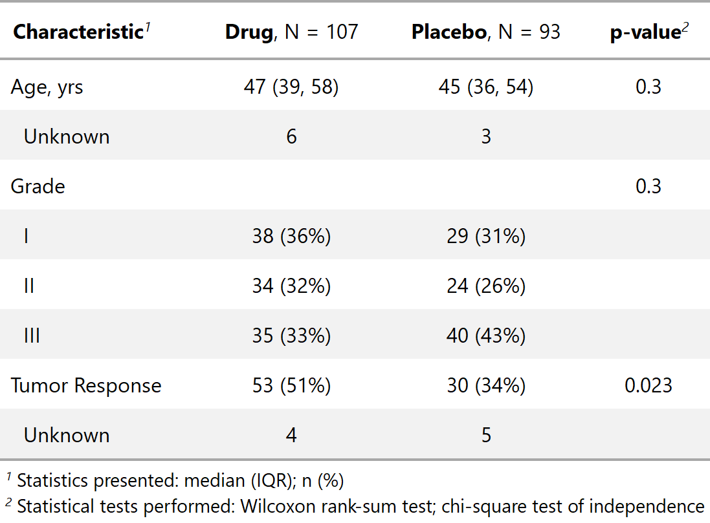

| add_p {gtsummary} | R Documentation |
Adds p-values to summary tables
Description
Adds p-values to tables created by tbl_summary by comparing values across groups.
Usage
add_p(x, test = NULL, pvalue_fun = style_pvalue,
group = x$inputs$group)
Arguments
x |
object with class tbl_summary from the tbl_summary function
|
test |
named list of statistical tests to perform,
e.g. list(age = "t.test", ptstage = "fisher.test"). Use the names
..continuous.. and ..categorical.. to specify a test for all variables
of that type (..categorical.. is applied to both categorical and
dichotomous variables).
Options include "t.test" for a t-test,
"wilcox.test" for a Wilcoxon rank-sum test,
"kruskal.test" for a Kruskal-Wallis rank-sum test,
"chisq.test" for a Chi-squared test of independence,
"fisher.test" for a Fisher's exact test,
and "lme4" for a random intercept model to account for clustered data.
For "lme4" to be used "group" must also be specified in the tbl_summary call.
|
pvalue_fun |
function to round and format p-values.
Default is style_pvalue.
The function must have a numeric vector input (the numeric, exact p-value),
and return a string that is the rounded/formatted p-value (e.g.
pvalue_fun = function(x) style_pvalue(x, digits = 2) or equivalently,
purrr::partial(style_pvalue, digits = 2)).
|
group |
character vector of an ID or grouping variable for which summary
statistics should not be printed. The column may be used in add_p to
calculate p-values with correlated data. Default is NULL
|
Example Output

Author(s)
Emily C. Zabor, Daniel D. Sjoberg
See Also
Other tbl_summary tools: add_n,
add_overall,
add_q.tbl_summary,
add_stat_label,
bold_italicize_labels_levels,
cols_label_summary,
inline_text.tbl_summary,
sort_p.tbl_summary,
tab_style_bold_p.tbl_summary,
tbl_summary
Examples
add_comp_ex1 <-
trial %>%
dplyr::select(age, grade, response, trt) %>%
tbl_summary(by = "trt") %>%
add_p()
[Package
gtsummary version 1.1.0
Index]